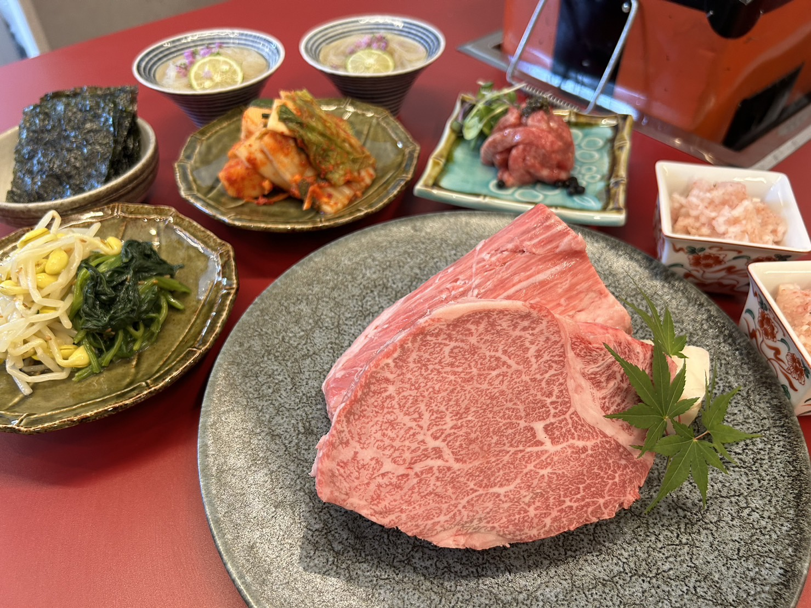

京都園
Premium Hire Yakiniku in the heart of Kyoto.
Specializing in filet & chateaubriand with an exquisite balance of lean meat and marbling. A calm, sophisticated dining experience in Higashiyama.

Premium Hire Yakiniku in the heart of Kyoto.
Specializing in filet & chateaubriand with an exquisite balance of lean meat and marbling. A calm, sophisticated dining experience in Higashiyama.
